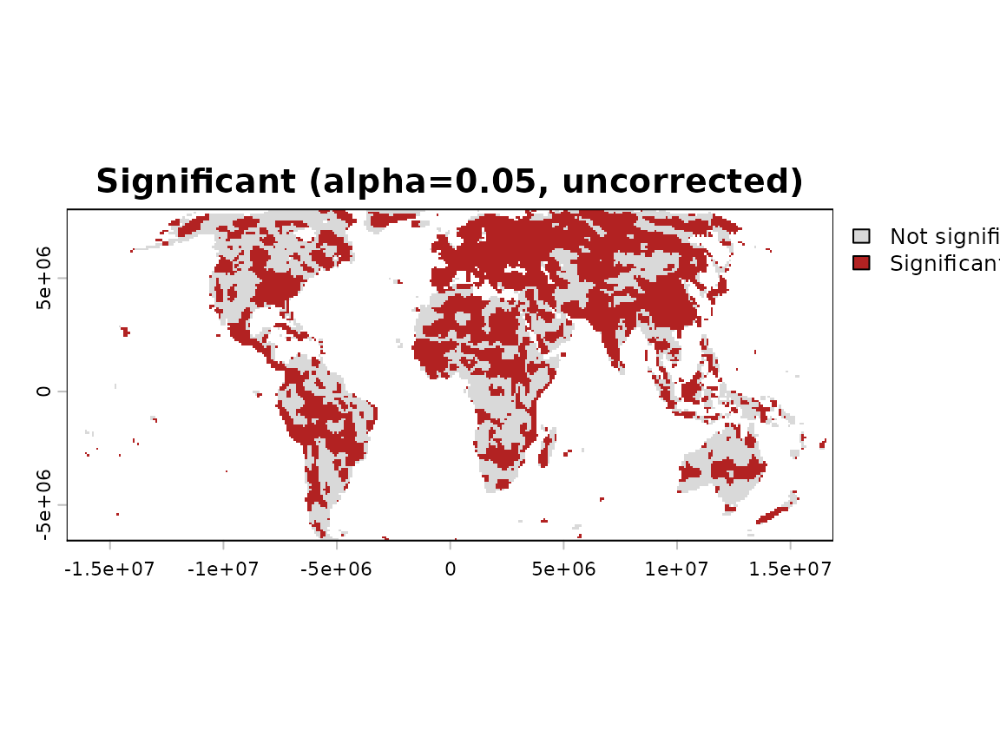
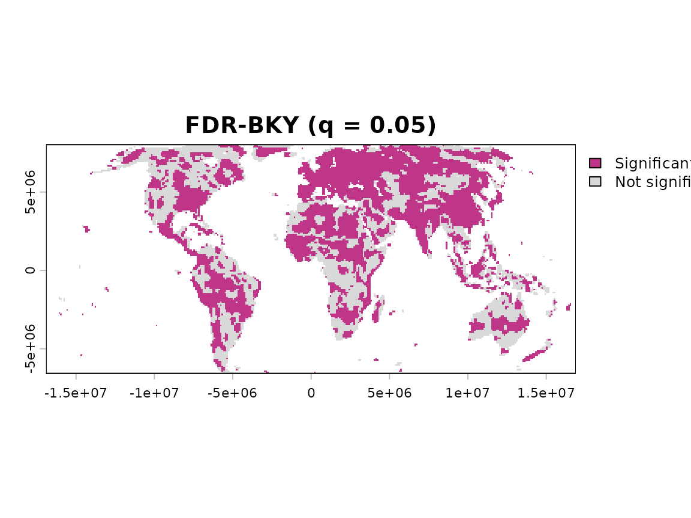
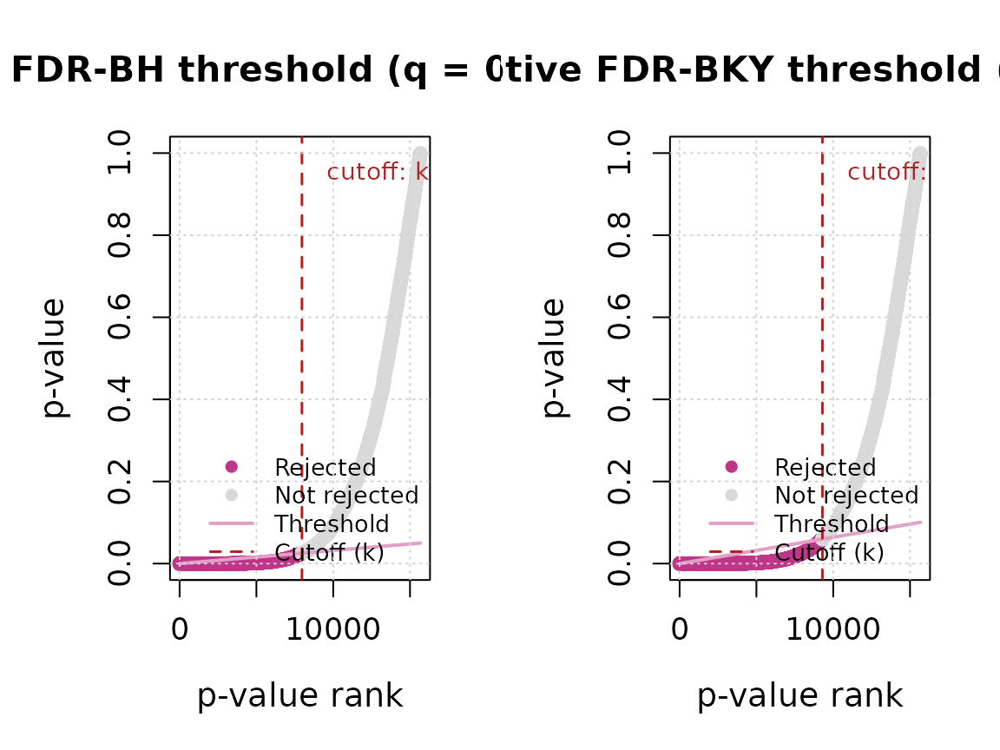

Why this matters
Consider a trend test applied to a single environmental time series at a significance level of α = 0.05. If the null hypothesis is true, there is a 5% probability of committing a Type I error: rejecting the null hypothesis when no genuine trend exists. The situation changes dramatically with gridded data, where a separate trend test is performed for every valid raster cell (Gutiérrez-Hernández and García, 2025a). Many trend tests may therefore be evaluated simultaneously. Even if the Type I error rate remains at 5% for each test, the total number of false positives can become large, allowing random variation to produce apparently meaningful spatial patterns.
Three general responses are possible. The first is to ignore multiplicity and report cells with raw p < α. This produces selective inference (Gutiérrez-Hernández and García, 2025b) because the apparently significant results are interpreted without considering the complete family of trend tests. The second is to control the family-wise error rate (FWER), limiting the probability of making even one false discovery across the entire family. This provides strict control but can substantially reduce statistical power when many cells are tested (García, 2004). The third is to control the false discovery rate (FDR) (Benjamini and Hochberg, 1995; Gutiérrez-Hernández and García, 2025c), accepting that some false positives may occur while limiting their expected proportion among all results declared significant. FDR therefore provides a more flexible balance between error control and the ability to detect genuine trends (García, 2003).
This is a real problem that undermines the reliability of significance claims in gridded environmental analyses, and one that is often ignored and omitted in practice – particularly in environmental remote sensing (Gutiérrez-Hernández and García, 2025d, preprint; Heumann, 2015).
What fdr_correction() does
fdr_correction() implements three procedures for
controlling the false discovery rate. Benjamini-Hochberg
(BH) is the standard step-up procedure and is
appropriate under independence or recognised forms of positive
dependence among tests. Benjamini-Krieger-Yekutieli
(BKY) is an adaptive two-stage procedure that estimates
how many null hypotheses are likely to be true and may provide greater
power under comparable dependence assumptions (Gutiérrez-Hernández and
García, 2025a). Benjamini-Yekutieli
(BY) controls FDR under arbitrary dependence but is
generally more conservative.
The function receives a raster or vector of p-values and applies BH, BKY, BY or any requested subset. For raster inputs, missing cells are preserved and only valid p-values are included in the family of simultaneous tests.
Basic workflow
trend <- trend_test(r, method = "CMK", report = FALSE, verbose = FALSE)
fdr <- fdr_correction(
trend$stats$p,
method = c("BH", "BKY", "BY"),
q = 0.05,
report = FALSE,
verbose = FALSE
)
fdr
#> <FDR correction result (BH, BKY, BY)>
#> Valid cells: 15675 | raw: 9004 significant
#> FDR-BH: 7965 significant
#> FDR-BKY: 9297 significant
#> FDR-BY: 4863 significant
summary(fdr)
#> Valid cells (m): 15675 | target q: 0.05
#> BKY -- pi0_hat: 0.497416 | m0_hat: 7797.0 | r1 (stage 1): 7878The summary compares all three procedures. The maps below first show the raw CMK decisions and then the results that remain significant after BKY correction.
bky <- fdr_correction(
trend$stats$p,
method = "BKY",
q = 0.05,
report = FALSE,
verbose = FALSE
)
plot(
trend,
which = "maps",
panels = "significance",
alpha = 0.05
)
plot(bky)
The threshold plot arranges all valid p-values from smallest to largest. Each point represents one trend test. Points near the beginning provide stronger evidence against the hypothesis of no trend, whereas points farther to the right provide weaker evidence.
The BH panel applies a standard threshold based on the total number of trend tests. The BKY panel adds an adaptive step: it estimates what proportion of the tested cells is likely to have no genuine trend and uses that information to refine the threshold.
If BKY estimates that almost all null hypotheses are true, its result will be similar to BH. If it estimates that some cells contain genuine trends, its adaptive threshold may become less restrictive and retain more significant results, thereby increasing statistical power.
The vertical line marks the final cutoff. Every trend test before or at that cutoff is declared significant, whereas every test after it is not. Comparing both panels therefore shows whether the adaptive BKY procedure retains more discoveries than BH and why. A fuller explanation of this adaptive mechanism is available in Gutiérrez-Hernández and García (2025a).
plot(fdr, which = "threshold")
Understanding the results
The unadjusted α is appropriate for interpreting a single trend test but is not appropriate for raster-wide inference. Applying the same raw threshold separately to thousands of cells ignores the accumulation of Type I errors across the complete family of trend tests. Consequently, a map based only on raw p < α may substantially overstate the amount of evidence for spatially distributed trends. Multiple-testing correction is therefore required when the results are interpreted collectively.
The target q defines the false discovery rate that the procedure aims to control. For example, q = 0.05 means that false discoveries are expected to represent no more than 5% of all cells declared significant, on average, under the assumptions of the selected procedure. It is not an adjusted α: α describes the Type I error rate of an individual unadjusted test, whereas q describes the expected proportion of false discoveries across the complete set of significant results. An adjusted threshold derived by a multiple-testing procedure is therefore neither the original unadjusted α nor the target q.
A cell rejected after FDR correction belongs to a family of discoveries whose expected proportion of false discoveries is controlled. It does not receive a separate local error guarantee. For convenience, FDR-corrected maps are often described as showing “significant pixels”, by analogy with cells satisfying an unadjusted significance level α. This shorthand is useful, but it does not mean that each highlighted pixel is individually significant at level α or has an error probability equal to q.
It is good practice to always report the number of valid cells
actually tested (m) alongside any count or percentage of
significant cells – fdr_summary()’s own table includes it
as n_valid for exactly this reason. The same percentage
means something very different depending on whether it comes from 50
valid cells or 50,000; omitting m leaves that scale
invisible to anyone reading the result later, including the original
analyst.
Choosing the main options
| Method | Main property | Guidance |
|---|---|---|
BH (Benjamini
& Hochberg, 1995) |
FDR control under independence or positive dependence | Recommended general starting point |
BKY (Benjamini, Krieger &
Yekutieli, 2006) |
Adaptive FDR control under independence or positive dependence | Recommended when adaptation is expected to increase power |
BY (Benjamini & Yekutieli,
2001) |
FDR control under arbitrary dependence | Usually conservative; use when arbitrary-dependence control is required |
BH (Benjamini and
Hochberg, 1995) and BKY (Benjamini, Krieger and
Yekutieli, 2006) assume that the trend tests are independent or
positively dependent. Positive spatial dependence is often expected in
gridded environmental data because neighbouring cells tend to share
similar conditions, but it should be examined rather than assumed.
spatial_autocorrelation() can be used to assess whether the
spatial pattern is consistent with positive dependence. BH and BKY are
the recommended procedures: BH provides a standard and reliable starting
point (Gutiérrez-Hernández
and García, 2025c), whereas BKY is particularly attractive when its
adaptive estimation is expected to increase statistical power (Gutiérrez-Hernández and
García, 2025a). BY accommodates arbitrary dependence but is highly
conservative and can substantially reduce power; it would therefore be
discarded in most applications and retained only when arbitrary
dependence must be explicitly accommodated. FDR correction itself is
usually very fast relative to trend testing.
Common mistakes
- Do not call q an adjusted α; they describe different error rates.
- Do not include missing or invalid cells in the number of tests.
- Do not interpret FDR rejection as evidence of local significance for an individual cell; the guarantee it provides applies to the expected proportion of false discoveries across the whole family of tests, not to any single result in isolation.
- Do not redefine the testing domain after inspecting the results; the family of tests must be fixed before looking at the outcomes, or the FDR guarantee no longer holds.
Next steps
Continue to vignette("g-workflow-trends")
to combine preprocessing, trend testing, slope estimation and FDR in one
workflow.
Further details
See ?fdr_correction, ?fdr_bh,
?fdr_bky and ?fdr_by for assumptions,
algorithms, diagnostics, limitations and references.
References
- Benjamini, Y. and Hochberg, Y. (1995) Controlling the False Discovery Rate. Journal of the Royal Statistical Society: Series B, 57, 289-300. https://doi.org/10.1111/j.2517-6161.1995.tb02031.x
- Benjamini, Y., Krieger, A.M. and Yekutieli, D. (2006) Adaptive Linear Step-Up Procedures That Control the False Discovery Rate. Biometrika, 93(3), 491-507. https://doi.org/10.1093/biomet/93.3.491
- Benjamini, Y. and Yekutieli, D. (2001) The Control of the False Discovery Rate in Multiple Testing Under Dependency. Annals of Statistics, 29(4), 1165-1188. https://doi.org/10.1214/aos/1013699998
- García, L.V. (2003) Controlling the False Discovery Rate in Ecological Research. Trends in Ecology & Evolution, 18(11), 553-554. https://doi.org/10.1016/j.tree.2003.08.011
- García, L.V. (2004) Escaping the Bonferroni Iron Claw in Ecological Studies. Oikos, 105(3), 657-663. https://doi.org/10.1111/j.0030-1299.2004.13046.x
- Gutiérrez-Hernández, O. and García, L.V. (2025a) Implementing the Linear Adaptive False Discovery Rate Procedure for Spatiotemporal Trend Testing. Mathematics, 13(22), 3630. https://doi.org/10.3390/math13223630
- Gutiérrez-Hernández, O. and García, L.V. (2025b) The Ghost of Selective Inference in Spatiotemporal Trend Analysis. Science of The Total Environment, 958, 177832. https://doi.org/10.1016/j.scitotenv.2024.177832
- Gutiérrez-Hernández, O. and García, L.V. (2025c) False Discovery Rate Estimation and Control in Remote Sensing. Remote Sensing Letters, 16(5), 537-548. https://doi.org/10.1080/2150704X.2025.2478664
- Gutiérrez-Hernández, O. and García, L.V. (2025d) Multiple Testing in Remote Sensing: Addressing the Elephant in the Room. SSRN preprint. https://doi.org/10.2139/ssrn.4891512
- Heumann, B.W. (2015) The Multiple Comparison Problem in Empirical Remote Sensing. Photogrammetric Engineering & Remote Sensing, 81(12), 921-926. https://doi.org/10.14358/PERS.81.12.921